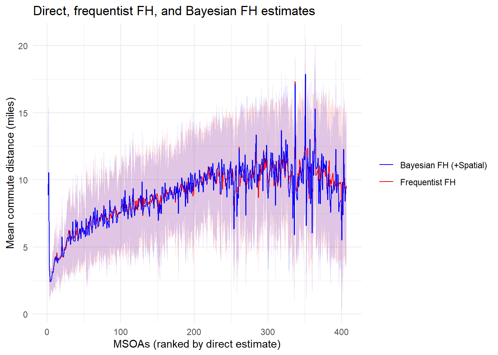
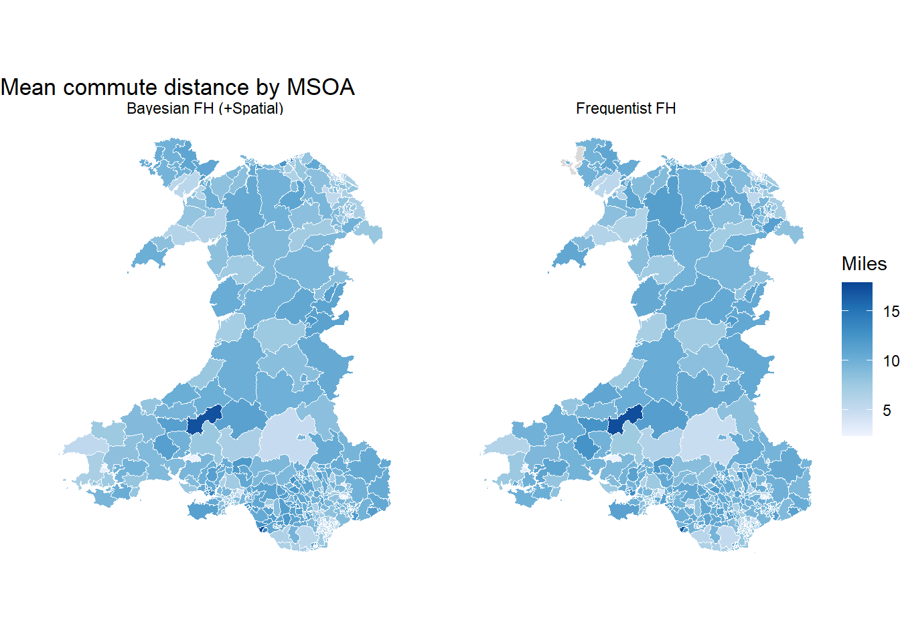

library(dplyr)
library(readr)
library(stringr)
library(tidyr)
library(sf)
library(ggplot2)
library(survey)
library(sae)
# Load analysis-ready survey indicator files
zip_tmp <- tempfile(fileext = ".zip")
clean_url <- "https://raw.githubusercontent.com/shaunhoang/tutorial-site/main/data/tutorial-clean-data.zip"
download.file(clean_url, zip_tmp, mode = "wb")
unzip(zip_tmp, exdir = tempdir())
base_path <- file.path(tempdir())
# Load boundaries for mapping
boundary_zip <- tempfile(fileext = ".zip")
boundary_url <- "https://raw.githubusercontent.com/shaunhoang/tutorial-site/main/data/tutorial-boundaries.zip"
download.file(boundary_url, boundary_zip, mode = "wb")
unzip(boundary_zip, exdir = tempdir())
msoa_boundaries <- st_read(
file.path(tempdir(), "boundaries", "boundaries-msoa.geojson"),
quiet = TRUE
) |>
rename(domain_id = MSOA21CD) |>
filter(str_starts(domain_id, "W"))
# Load Bayesian area-level estimates exported from the previous workbook
bayesian_est_url <- "https://raw.githubusercontent.com/shaunhoang/tutorial-site/main/data/bayesian_area_sae_commute_estimates.csv"
bayesian_area_estimates <- read_csv(
bayesian_est_url,
show_col_types = FALSE
)
# Load the standardised covariates used in the Bayesian FH model
covariate_url <- "https://raw.githubusercontent.com/shaunhoang/tutorial-site/main/data/bayesian_area_sae_commute_covariates.csv"
commute_covariates <- read_csv(
covariate_url,
show_col_types = FALSE
)[WIP] Frequentist Approach to SAE
Frequentist small area estimation is a model-based approach where estimation is done using purely the observed data, without incroporating priors and other assumptions seen in the Bayesian approach. In it, unknown model quantities are estimated as fixed but unknown parameters, as opposed to a probability distribution.
1 Pros
Frequentist SAE is often preferred when the priority is a transparent, repeatable production workflow.
- Familiar reporting: outputs such as point estimates, standard errors, RMSEs, and confidence intervals are familiar.
- Production-friendly: frequentist models can often be fitted quickly and repeatedly across many indicators.
- Lower computational burden: many frequentist SAE models are lighter to run than fully Bayesian models.
2 Cons
Frequentist SAE can be less suitable when uncertainty communication or prediction for no-sample areas is central.
- Less intuitive uncertainty: confidence intervals and RMSEs can be harder to explain than credible intervals or posterior probabilities.
- Out-of-sample areas need caution: areas with no direct estimate may require separate synthetic prediction or a model that explicitly handles missing direct estimates.
3 Practical Tutorial
Here, we fit a simple frequentist Fay-Herriot model for commute_distance, then compare the resulting EBLUPs with the direct estimates and the Bayesian area-level estimates.
First, recreate the direct estimates and sampling variances.
survey_indicator_commute <- read_csv(
file.path(base_path, "ind_weight_commute_distance.csv"),
show_col_types = FALSE
) |>
filter(
!is.na(indicator),
!is.na(weight),
!is.na(domain_id),
!is.na(strata)
)
design_commute <- survey::svydesign(
ids = ~1,
strata = ~strata,
weights = ~weight,
data = survey_indicator_commute
)
commute_mean <- survey::svyby(
formula = ~indicator,
by = ~domain_id,
design = design_commute,
FUN = survey::svymean,
vartype = "se",
na.rm = TRUE
) |>
tibble::as_tibble()
direct_est_commute <- commute_mean |>
transmute(
domain_id,
direct_estimate = indicator,
variance = se^2,
direct_ci_lower = direct_estimate - 1.96 * sqrt(variance),
direct_ci_upper = direct_estimate + 1.96 * sqrt(variance),
direct_ci_width = direct_ci_upper - direct_ci_lower
)Next, fit a covariate-based Fay-Herriot model using the sae package. The covariates are the same standardised MSOA-level covariates used in the Bayesian FH model.
fh_input <- direct_est_commute |>
left_join(commute_covariates, by = "domain_id") |>
filter(!is.na(direct_estimate), !is.na(variance), variance > 0) |>
as.data.frame()
freq_fh_result <- sae::mseFH(
direct_estimate ~ cov_pop_density +
cov_share_work_home +
cov_share_hh_withcar +
cov_share_detached +
cov_share_higher_managerial,
vardir = variance,
method = "REML",
data = fh_input
)
freq_fh_estimates <- fh_input |>
transmute(
domain_id,
freq_fh_estimate = as.numeric(freq_fh_result$est$eblup),
freq_fh_mse = as.numeric(freq_fh_result$mse),
freq_fh_ci_lower = freq_fh_estimate - 1.96 * sqrt(freq_fh_mse),
freq_fh_ci_upper = freq_fh_estimate + 1.96 * sqrt(freq_fh_mse),
freq_fh_ci_width = freq_fh_ci_upper - freq_fh_ci_lower
)Compare the direct estimate, frequentist FH EBLUP, and Bayesian spatial FH estimate. MSOAs are ranked by the direct estimate.
commute_compare <- bayesian_area_estimates |>
dplyr::select(
domain_id,
direct_estimate,
direct_ci_lower,
direct_ci_upper,
spatial_fh_estimate,
spatial_fh_ci_lower,
spatial_fh_ci_upper
) |>
left_join(freq_fh_estimates, by = "domain_id")
ranked_commute <- commute_compare |>
filter(!is.na(direct_estimate)) |>
arrange(direct_estimate, domain_id) |>
mutate(direct_rank = row_number())
ggplot(ranked_commute, aes(x = direct_rank)) +
geom_ribbon(aes(ymin = freq_fh_ci_lower, ymax = freq_fh_ci_upper), fill = "red", alpha = 0.12) +
geom_ribbon(aes(ymin = spatial_fh_ci_lower, ymax = spatial_fh_ci_upper), fill = "blue", alpha = 0.12) +
geom_line(aes(y = freq_fh_estimate, colour = "Frequentist FH"), linewidth = 0.45, na.rm = TRUE) +
geom_line(aes(y = spatial_fh_estimate, colour = "Bayesian FH (+Spatial)"), linewidth = 0.45, na.rm = TRUE) +
scale_colour_manual(values = c(
"Frequentist FH" = "red",
"Bayesian FH (+Spatial)" = "blue"
)) +
labs(
title = "Direct, frequentist FH, and Bayesian FH estimates",
x = "MSOAs (ranked by direct estimate)",
y = "Mean commute distance (miles)",
colour = NULL
) +
theme_minimal()
Map the same three estimates to compare their spatial patterns.
commute_compare_map <- msoa_boundaries |>
left_join(commute_compare, by = "domain_id") |>
dplyr::select(freq_fh_estimate, spatial_fh_estimate, geometry) |>
rename(
`Frequentist FH` = freq_fh_estimate,
`Bayesian FH (+Spatial)` = spatial_fh_estimate
) |>
pivot_longer(
cols = c(`Frequentist FH`, `Bayesian FH (+Spatial)`),
names_to = "method",
values_to = "estimate"
)
ggplot(commute_compare_map) +
geom_sf(aes(fill = estimate), colour = "white", linewidth = 0.05) +
facet_wrap(~method) +
scale_fill_distiller(palette = "Blues", direction = 1, na.value = "grey85") +
labs(
title = "Mean commute distance by MSOA",
fill = "Miles"
) +
theme_void()